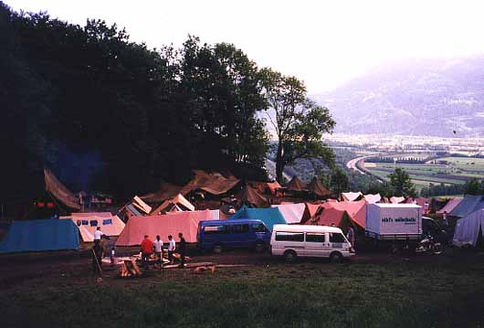
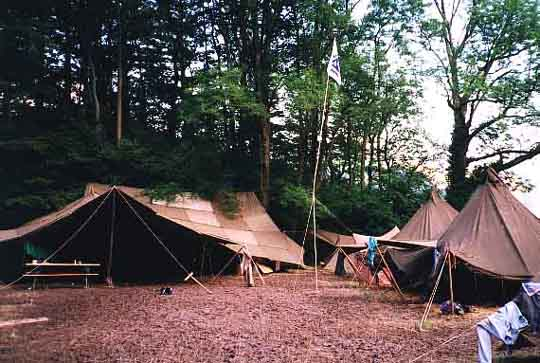
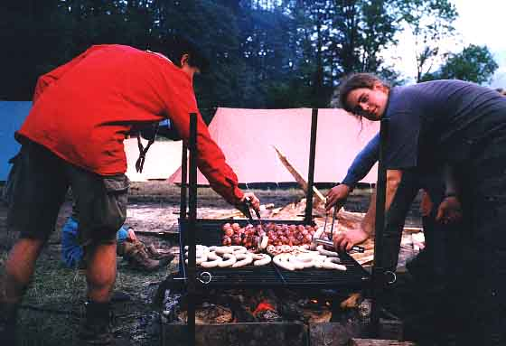

Regionales Pfingstlager der Pfadfinder in Trübbach
Jedes Jahr findet an Pfingsten einer der Höhepunkte im Pfadfinderjahr statt, das dreitägige Pfingstlager. Vor zwei Jahre wurde dieser Anlass zum erstenmal von einigen Abteilungen der Region gemeinsam durchgeführt,

und aufgrund des Erfolges dieses Jahr wiederholt. Am RegioPFILA 99 nahmen sechs Abteilungen aus Walenstadt, Flums, Sargans, Bad Ragaz und Buchs mit ingesamt ungefähr 350 Mitgliedern teil. Der Lagerplatz befand sich direkt über dem Trübbacher Steinbruch. Dort wurden am Freitag abend bei strömendem Regen von Leitern und Rovern erste Zelte aufgebaut, und bei immer noch strömendem Regen trafen am Samstag die übrigen Teilnehmer ein. Die beschränkte Grösse des Platzes brachte die Pfadis der verschiedenen Abteilungen - welche mottogemäss alle als Mannschaften zu einer grossen Olympiade angereist waren - einander näher. Dies war auch eines der Hauptziele dieses Anlasses, die Förderung des Kontaktes zwischen den verschiedenen Abteilungen. Sehr stark dazu beigetragen hatte sicher die am Sonntag stattfindende Olympiade in bunt aus den Abteilungen zusammengewürfelten Gruppen, welche an verschiedenen Posten ihr Können oder ihre Kreativität spielen lassen konnten. Beim anschliessenden gemeinsamen Grillieren lernten sich die verschiedenen Pfadis noch besser kennen, Ideen wurden ausgetauscht, und auch die kleineren Teilnehmer nahmen wahr, dass die Pfadi etwas grösseres ist als nur gerade ihre eigene Abteilung.
Trotz erlebtem Regen und bis zur Unkenntlichkeit verschlammten Schuhen (was an Pfingsten eigentlich normal ist) machten sich am Pfingstmontag die 350 Pfadis bei fast unglaublich sommerlichem Wetter glücklich, zufrieden und um viele wertvolle Erfahrungen reicher wieder auf den Heimweg. Noch bevor der auf dem Lagerplatz entstandene Sumpf vollständig getrocknet war, begann die Diskussion darüber, wann das nächste RegioPFILA stattfinden würde...